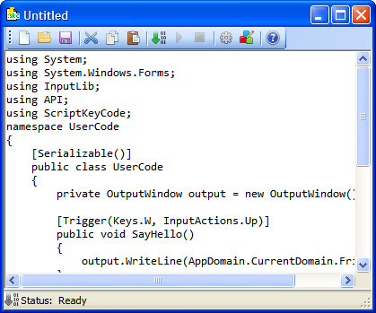

Sand-boxing
In ScriptKey all the code you write is sand-boxed in its own AppDomain. Furthermore, if any method you write throws a runtime error, the code is stopped and the error is displayed What does this do for you is keep you any code with errors from crashing the application and helps with the debugging process.
Fast Method Invokes
In order to keep your methods running at peak performance I borrowed some code from an article at CodeProject.com. What it does is automatically take your methods and wrap them in a speedy dynamic method delegate. The source code for the article along with detailed about it can be found at http://www.codeproject.com/KB/cs/dynamicmethoddelegates.aspx
Integrated Editor
ScriptKey includes its own built-in editor for building your source code files.

Created with the Personal Edition of HelpNDoc: Easily create HTML Help documents